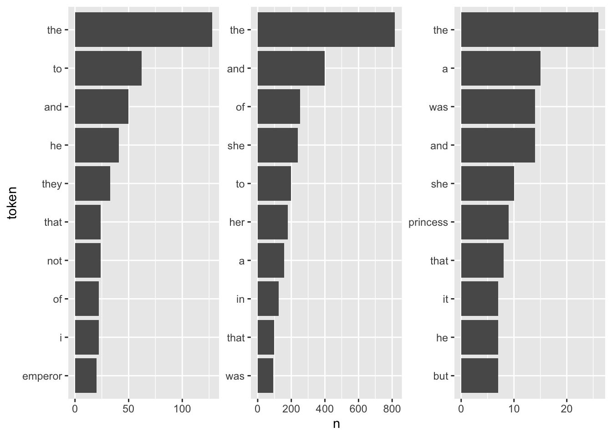
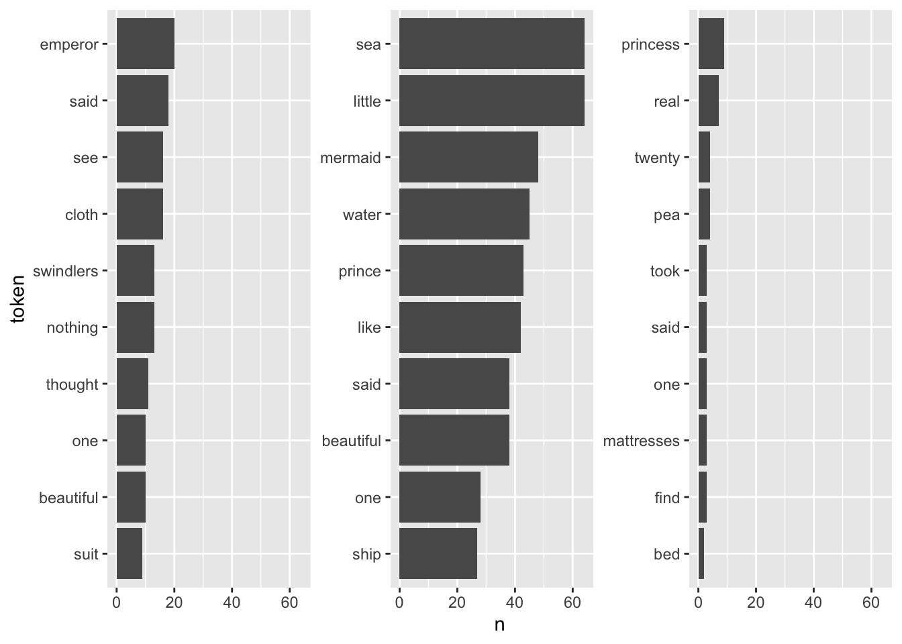
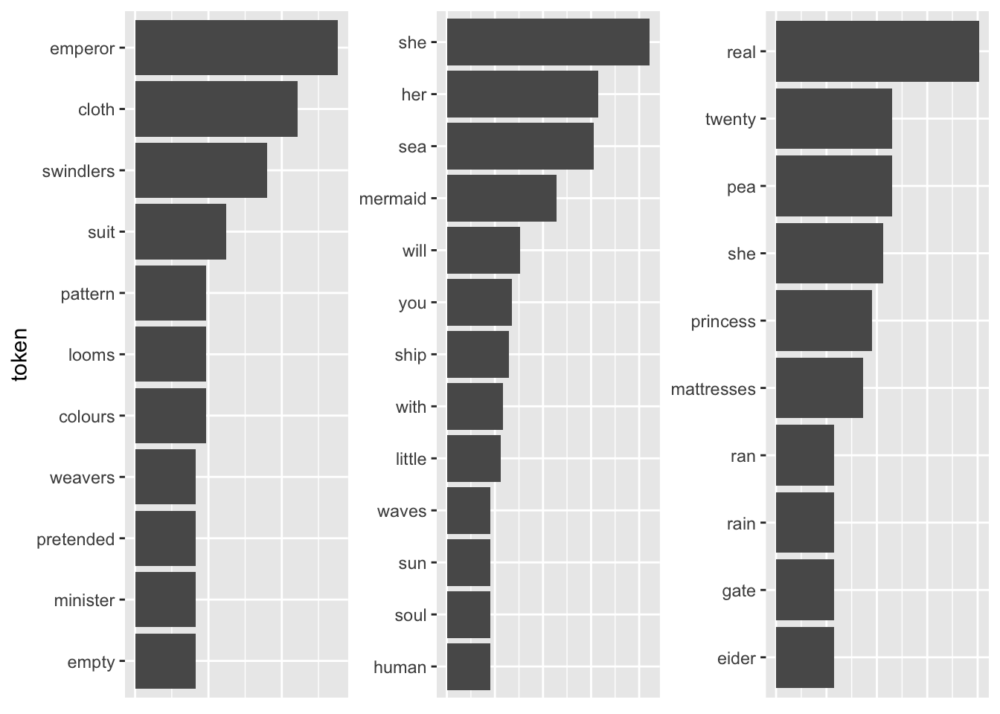
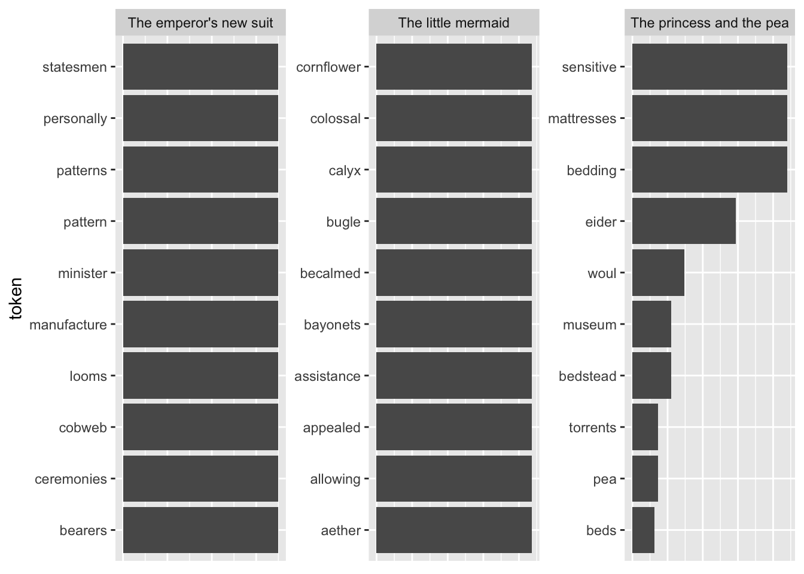
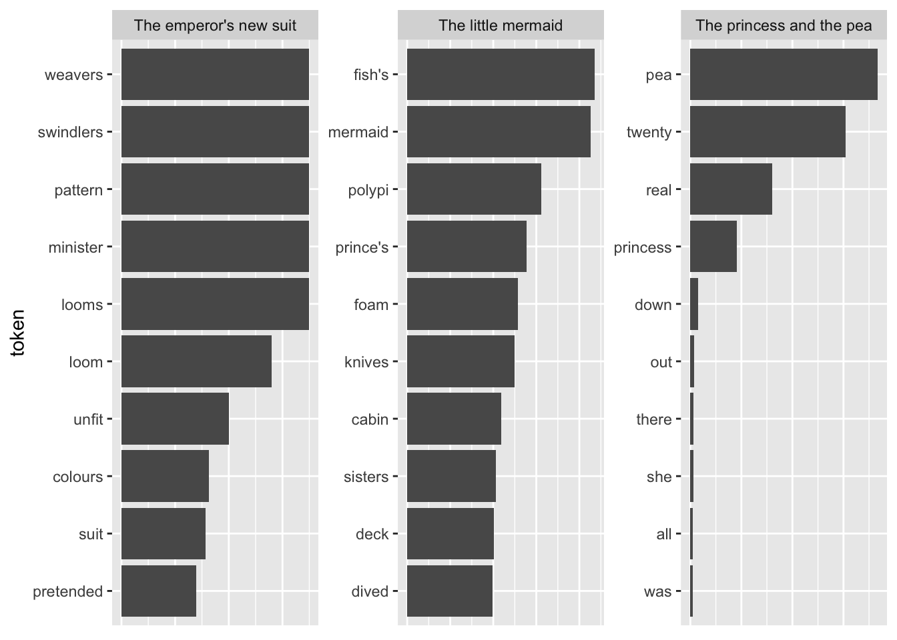

Chapter 9: Text Preprocessing and Featurization
After having learned about the basics of string manipulation, we are now turning to how you can turn your collection of documents, your corpus, into a representation that lends itself nicely to quantitative analyses of text. There are a couple of packages around which you can use for text mining, such as quanteda (Benoit et al. 2018), tm (Feinerer, Hornik, and Meyer 2008), and tidytext (Silge and Robinson 2016), the latter being probably the most recent addition to them. A larger overview of relevant packages can be found on this CRAN Task View.
As you could probably tell from its name, tidytext obeys the tidy data principles1. “Every observation is a row” translates here to “every token has its own row” – “token” not necessarily relating to a singular term, but also so-called n-grams. In the following, we will demonstrate what text mining using tidy principles can look like in R. For this, we will first cover the preprocessing of text using tidy data principles. Thereafter, we will delve into more advanced preprocessing such as the lemmatization of words and part-of-speech (POS) tagging using spaCy (Honnibal and Montani 2017). Finally, different R packages are using different representations of text data. Depending on the task at hand, you will therefore have to be able to transform the data into the proper format. This will be covered in the final part.
Pre-processing with tidytext
The sotu package contains all of the so-called “State of the Union” addresses – the president gives them to the congress annually – since 1790.
needs(hcandersenr, SnowballC, sotu, spacyr, stopwords, tidyverse, tidytext)
sotu_raw <- sotu_meta |>
mutate(text = sotu_text) |>
distinct(text, .keep_all = TRUE)
sotu_raw |> glimpse()Rows: 240
Columns: 7
$ X <int> 1, 2, 3, 4, 5, 6, 7, 8, 9, 10, 11, 12, 13, 14, 15, 16, 17…
$ president <chr> "George Washington", "George Washington", "George Washing…
$ year <int> 1790, 1790, 1791, 1792, 1793, 1794, 1795, 1796, 1797, 179…
$ years_active <chr> "1789-1793", "1789-1793", "1789-1793", "1789-1793", "1793…
$ party <chr> "Nonpartisan", "Nonpartisan", "Nonpartisan", "Nonpartisan…
$ sotu_type <chr> "speech", "speech", "speech", "speech", "speech", "speech…
$ text <chr> "Fellow-Citizens of the Senate and House of Representativ…Now that the data are read in, I need to put them into the proper format and clean them. For this purpose, I take a look at the first entry of the tibble.
sotu_raw |> slice(1) |> pull(text) |> str_sub(1, 500)[1] "Fellow-Citizens of the Senate and House of Representatives: \n\nI embrace with great satisfaction the opportunity which now presents itself of congratulating you on the present favorable prospects of our public affairs. The recent accession of the important state of North Carolina to the Constitution of the United States (of which official information has been received), the rising credit and respectability of our country, the general and increasing good will toward the government of the Union, an"unnest_tokens()
I will focus on the 20th-century SOTUs. Here, the dplyr::between() function comes in handy.
sotu_20cent_raw <- sotu_raw |>
filter(between(year, 1900, 2000))
glimpse(sotu_20cent_raw)Rows: 109
Columns: 7
$ X <int> 112, 113, 114, 115, 116, 117, 118, 119, 120, 121, 122, 12…
$ president <chr> "William McKinley", "Theodore Roosevelt", "Theodore Roose…
$ year <int> 1900, 1901, 1902, 1903, 1904, 1905, 1906, 1907, 1908, 190…
$ years_active <chr> "1897-1901", "1901-1905", "1901-1905", "1901-1905", "1901…
$ party <chr> "Republican", "Republican", "Republican", "Republican", "…
$ sotu_type <chr> "written", "written", "written", "written", "written", "w…
$ text <chr> "\n\n To the Senate and House of Representatives: \n\nAt …In a first step, I bring the data into a form that facilitates manipulation: a tidy tibble. For this, I use tidytext’s unnest_tokens() function. It basically breaks the corpus up into tokens – the respective words. Let’s demonstrate that with a brief, intuitive example. `
toy_example <- tibble(
text = "Look, this is a brief example for how tokenization works."
)
toy_example |>
unnest_tokens(output = token,
input = text)# A tibble: 10 × 1
token
<chr>
1 look
2 this
3 is
4 a
5 brief
6 example
7 for
8 how
9 tokenization
10 works Note that unnest_tokens() already reduces complexity for us by removing the comma and the full-stop and making everything lower-case.
sotu_20cent_tokenized <- sotu_20cent_raw |>
unnest_tokens(output = token, input = text)
glimpse(sotu_20cent_tokenized)Rows: 911,321
Columns: 7
$ X <int> 112, 112, 112, 112, 112, 112, 112, 112, 112, 112, 112, 11…
$ president <chr> "William McKinley", "William McKinley", "William McKinley…
$ year <int> 1900, 1900, 1900, 1900, 1900, 1900, 1900, 1900, 1900, 190…
$ years_active <chr> "1897-1901", "1897-1901", "1897-1901", "1897-1901", "1897…
$ party <chr> "Republican", "Republican", "Republican", "Republican", "…
$ sotu_type <chr> "written", "written", "written", "written", "written", "w…
$ token <chr> "to", "the", "senate", "and", "house", "of", "representat…The new tibble consists of 911321 rows. Please note that usually, you have to put some sort of id column into your original tibble before tokenizing it, e.g., by giving each case – representing a document, or chapter, or whatever – a separate id (e.g., using tibble::rowid_to_column()). This does not apply here, because my original tibble came with a bunch of metadata (president, year, party) which serve as sufficient identifiers.
Removal of unnecessary content
The next step is to remove stop words – they are not necessary for the analyses I want to perform. The stopwords package has a nice list for English.
stopwords_vec <- stopwords(language = "en")
stopwords(language = "de") # the german equivalent [1] "aber" "alle" "allem" "allen" "aller" "alles"
[7] "als" "also" "am" "an" "ander" "andere"
[13] "anderem" "anderen" "anderer" "anderes" "anderm" "andern"
[19] "anderr" "anders" "auch" "auf" "aus" "bei"
[25] "bin" "bis" "bist" "da" "damit" "dann"
[31] "der" "den" "des" "dem" "die" "das"
[37] "daß" "derselbe" "derselben" "denselben" "desselben" "demselben"
[43] "dieselbe" "dieselben" "dasselbe" "dazu" "dein" "deine"
[49] "deinem" "deinen" "deiner" "deines" "denn" "derer"
[55] "dessen" "dich" "dir" "du" "dies" "diese"
[61] "diesem" "diesen" "dieser" "dieses" "doch" "dort"
[67] "durch" "ein" "eine" "einem" "einen" "einer"
[73] "eines" "einig" "einige" "einigem" "einigen" "einiger"
[79] "einiges" "einmal" "er" "ihn" "ihm" "es"
[85] "etwas" "euer" "eure" "eurem" "euren" "eurer"
[91] "eures" "für" "gegen" "gewesen" "hab" "habe"
[97] "haben" "hat" "hatte" "hatten" "hier" "hin"
[103] "hinter" "ich" "mich" "mir" "ihr" "ihre"
[109] "ihrem" "ihren" "ihrer" "ihres" "euch" "im"
[115] "in" "indem" "ins" "ist" "jede" "jedem"
[121] "jeden" "jeder" "jedes" "jene" "jenem" "jenen"
[127] "jener" "jenes" "jetzt" "kann" "kein" "keine"
[133] "keinem" "keinen" "keiner" "keines" "können" "könnte"
[139] "machen" "man" "manche" "manchem" "manchen" "mancher"
[145] "manches" "mein" "meine" "meinem" "meinen" "meiner"
[151] "meines" "mit" "muss" "musste" "nach" "nicht"
[157] "nichts" "noch" "nun" "nur" "ob" "oder"
[163] "ohne" "sehr" "sein" "seine" "seinem" "seinen"
[169] "seiner" "seines" "selbst" "sich" "sie" "ihnen"
[175] "sind" "so" "solche" "solchem" "solchen" "solcher"
[181] "solches" "soll" "sollte" "sondern" "sonst" "über"
[187] "um" "und" "uns" "unse" "unsem" "unsen"
[193] "unser" "unses" "unter" "viel" "vom" "von"
[199] "vor" "während" "war" "waren" "warst" "was"
[205] "weg" "weil" "weiter" "welche" "welchem" "welchen"
[211] "welcher" "welches" "wenn" "werde" "werden" "wie"
[217] "wieder" "will" "wir" "wird" "wirst" "wo"
[223] "wollen" "wollte" "würde" "würden" "zu" "zum"
[229] "zur" "zwar" "zwischen" #stopwords_getlanguages(source = "snowball") # find the languages that are available
#stopwords_getsources() # find the dictionaries that are availableRemoving the stop words now is straight-forward:
sotu_20cent_tokenized_nostopwords <- sotu_20cent_tokenized |>
filter(!token %in% stopwords_vec)Another thing I forgot to remove are digits. They do not matter for the analyses either:
sotu_20cent_tokenized_nostopwords_nonumbers <- sotu_20cent_tokenized_nostopwords |>
filter(!str_detect(token, "[:digit:]"))The corpus now contains 19263 different tokens, the so-called “vocabulary.” 1848 tokens were removed from the vocuabulary. This translates to a signifiant reduction in corpus size though, the new tibble only consists of 464271 rows, basically a 50 percent reduction.
Stemming
To decrease the complexity of the vocabulary even further, we can reduce the tokens to their stem using the SnowballC package and its function wordStem():
sotu_20cent_tokenized_nostopwords_nonumbers_stemmed <- sotu_20cent_tokenized_nostopwords_nonumbers |>
mutate(token_stemmed = wordStem(token, language = "en"))
#SnowballC::getStemLanguages() # if you want to know the abbreviations for other languages as wellMaybe I should also remove insignificant words, i.e., ones that appear less than 0.05 percent of the time.
n_rows <- nrow(sotu_20cent_tokenized_nostopwords_nonumbers_stemmed)
sotu_20cent_tokenized_nostopwords_nonumbers_stemmed |>
group_by(token_stemmed) |>
filter(n() > n_rows/2000)# A tibble: 285,203 × 8
# Groups: token_stemmed [490]
X president year years_active party sotu_type token token_stemmed
<int> <chr> <int> <chr> <chr> <chr> <chr> <chr>
1 112 William McKinley 1900 1897-1901 Repu… written sena… senat
2 112 William McKinley 1900 1897-1901 Repu… written house hous
3 112 William McKinley 1900 1897-1901 Repu… written repr… repres
4 112 William McKinley 1900 1897-1901 Repu… written old old
5 112 William McKinley 1900 1897-1901 Repu… written inco… incom
6 112 William McKinley 1900 1897-1901 Repu… written new new
7 112 William McKinley 1900 1897-1901 Repu… written cent… centuri
8 112 William McKinley 1900 1897-1901 Repu… written begin begin
9 112 William McKinley 1900 1897-1901 Repu… written last last
10 112 William McKinley 1900 1897-1901 Repu… written sess… session
# ℹ 285,193 more rowsThese steps have brought down the vocabulary from 19263 to 10971.
In a nutshell
Well, all those things could also be summarized in one nice cleaning pipeline:
sotu_20cent_clean <- sotu_raw |>
filter(between(year, 1900, 2000)) |>
unnest_tokens(output = token, input = text) |>
anti_join(get_stopwords(), by = c("token" = "word")) |>
filter(!str_detect(token, "[0-9]")) |>
mutate(token = wordStem(token, language = "en")) |>
group_by(token) |>
filter(n() > n_rows/2000)Now I have created a nice tibble containing the SOTU addresses of the 20th century in a tidy format. This is a great point of departure for subsequent analyses.
Exercises
- Download Twitter timeline data (
timelines <- read_csv("https://www.dropbox.com/s/dpu5m3xqz4u4nv7/tweets_house_rep_party.csv?dl=1") |> filter(!is.na(party)). Let’s look at abortion-related tweets and how the language may differ between parties. Filter relevant tweets using a vector of keywords and a regular expression (hint:filter(str_detect(text, str_c(keywords, collapse = "|")))). Preprocess the Tweets as follows:
- Unnest the tokens.
- Remove stop words.
- Perform stemming.
Solution. Click to expand!
needs(tidyverse, tidytext, stopwords, SnowballC)
timelines <- read_csv("https://www.dropbox.com/s/dpu5m3xqz4u4nv7/tweets_house_rep_party.csv?dl=1") |>
filter(!is.na(party))
keywords <- c("abortion", "prolife", " roe ", " wade ", "roevswade", "baby", "fetus", "womb", "prochoice", "leak")
preprocessed <- timelines |>
rowid_to_column("doc_id") |>
filter(str_detect(text, str_c(keywords, collapse = "|"))) |>
unnest_tokens(word, text) |>
anti_join(get_stopwords()) |>
mutate(stemmed = wordStem(word))Lemmatization, Named Entity Recognition, POS-tagging, and Dependency Parsing with spaCyR
Advanced operations to the end of extracting information and annotating text (and more!) can be done with spaCyr (Benoit and Matsuo 2020). spaCyr is an R wrapper around the spaCy Python package and, therefore, a bit tricky to install at first. You can find instructions here.
The functionalities spaCyr offers you are the following2:
- parsing texts into tokens or sentences;
- lemmatizing tokens;
- parsing dependencies (to identify the grammatical structure of the sentence); and
- identifying, extracting, or consolidating token sequences that form named entities or noun phrases.
In brief, preprocessing with spaCyr is computationally more expensive than using, for instance, tidytext, but it will give you more accurate lemmatization instead of “stupid,” rule-based stemming.. Also, it allows you to break up documents into smaller entities, sentences, which might be more suitable, e.g., as input for classifiers (since sentences tend to be about one topic, they allow for more fine-grained analyses). Part-of-speech (POS) tagging basically provides you with the functions of the different terms within the sentence. This might prove useful for tasks such as sentiment analysis. The final task spaCyr can help you with is Named Entity Recognition (NER) which can be used for tasks such as sampling relevant documents.
Initializing spaCy
Before using spaCyr, it needs to be initialized. What happens during this process is that R basically opens a connection to Python so that it can then run the spaCyr functions in Python’s spaCy. Once you have set up everything properly (see instructions), you can initialize it using spacy_initialize(model). Different language models can be specified and an overview can be found here. Note that a process of spaCy is started when you spacy_initialize() and continues running in the background. Hence, once you don’t need it anymore, or want to load a different model, you should spacy_finalize().
needs(spacyr)
spacy_initialize(model = "en_core_web_sm")successfully initialized (spaCy Version: 3.8.3, language model: en_core_web_sm)# to download new model -- here: French
#spacy_finalize()
#spacy_download_langmodel(model = "fr_core_news_sm")
#spacy_initialize(model = "fr_core_news_sm") #check that it has worked
spacy_finalize()
#spacy_initialize(model = "de_core_web_sm") # for Germanspacy_parse()
spaCyr’s workhorse function is spacy_parse(). It takes a character vector or TIF-compliant data frame. The latter is basically a tibble containing at least two columns, one named doc_id with unique document ids and one named text, containing the respective documents.
tif_toy_example <- tibble(
doc_id = "doc1",
text = "Look, this is a brief example for how tokenization works. This second sentence allows me to demonstrate another functionality of spaCy."
)
toy_example_vec <- tif_toy_example$text
spacy_parse(tif_toy_example)successfully initialized (spaCy Version: 3.8.3, language model: en_core_web_sm) doc_id sentence_id token_id token lemma pos entity
1 doc1 1 1 Look look VERB
2 doc1 1 2 , , PUNCT
3 doc1 1 3 this this PRON
4 doc1 1 4 is be AUX
5 doc1 1 5 a a DET
6 doc1 1 6 brief brief ADJ
7 doc1 1 7 example example NOUN
8 doc1 1 8 for for ADP
9 doc1 1 9 how how SCONJ
10 doc1 1 10 tokenization tokenization NOUN
11 doc1 1 11 works work VERB
12 doc1 1 12 . . PUNCT
13 doc1 2 1 This this DET
14 doc1 2 2 second second ADJ ORDINAL_B
15 doc1 2 3 sentence sentence NOUN
16 doc1 2 4 allows allow VERB
17 doc1 2 5 me I PRON
18 doc1 2 6 to to PART
19 doc1 2 7 demonstrate demonstrate VERB
20 doc1 2 8 another another DET
21 doc1 2 9 functionality functionality NOUN
22 doc1 2 10 of of ADP
23 doc1 2 11 spaCy spacy NUM
24 doc1 2 12 . . PUNCT The output of spacy_parse() and the sotu-speeches looks as follows:
sotu_speeches_tif <- sotu_meta |>
mutate(text = sotu_text) |>
distinct(text, .keep_all = TRUE) |>
filter(between(year, 1990, 2000)) |>
group_by(year) |>
summarize(text = str_c(text, collapse = " ")) |>
select(doc_id = year, text)
glimpse(sotu_speeches_tif)Rows: 11
Columns: 2
$ doc_id <int> 1990, 1991, 1992, 1993, 1994, 1995, 1996, 1997, 1998, 1999, 2000
$ text <chr> "\n\nMr. President, Mr. Speaker, Members of the United States C…sotu_parsed <- spacy_parse(sotu_speeches_tif,
pos = TRUE,
tag = TRUE,
lemma = TRUE,
entity = TRUE,
dependency = TRUE,
nounphrase = TRUE,
multithread = TRUE)
# if you haven't installed spacy yet, uncomment and run the following line
#sotu_parsed <- read_rds("https://github.com/fellennert/sicss-paris-2023/raw/main/code/sotu_parsed.rds")Note that this is already fairly similar to the output of tidytext’s unnest_tokens() function. The advantages are that the lemmas are more accurate, that we have a new sub-entity – sentences –, and that there is now more information on the type and meanings of the words.
Exercises
- Perform the same steps as in exercise 1 but using
spacyr. What works better, lemmatization or stemming?
Solution. Click to expand!
needs(spacyr)
spacy_initialize(model = "en_core_web_sm")
timelines_meta <- timelines |>
filter(str_detect(text, str_c(keywords, collapse = "|"))) |>
rowid_to_column("doc_id") |>
select(-text)
timelines_spacy <- timelines |>
filter(str_detect(text, str_c(keywords, collapse = "|"))) |>
select(text) |>
rowid_to_column("doc_id") |>
spacy_parse(entity = FALSE) |>
anti_join(get_stopwords(), by = c("token" = "word"))Converting between formats
While the tidytext format lends itself nicely to “basic” operations and visualizations, you will have to use different representations of text data for other applications such as topic models or word embeddings. On the other hand, you might want to harness, for instance, the ggplot2 package for visualization. In this case, you will need to project the data into a tidy format. The former operations are performed using multiple cast_.*() functions, the latter using the tidy() function from the broom package whose purpose is to bring data from foreign structures to tidy representations.
In the following, I will briefly explain common representations and the packages that use them. Thereby, I draw heavily on the chapter in Tidy Text Mining with R that is dedicated to the topic.
Document-term matrix
A document-term matrix contains rows that represent a document and columns that represent terms. The values usually correspond to how often the term appears in the respective document.
In R, a common implementation of DTMs is the DocumentTermMatrix class in the tm package. The topicmodels package which we will use for performing LDA comes with a collection of example data.
library(topicmodels)
data("AssociatedPress")
class(AssociatedPress)[1] "DocumentTermMatrix" "simple_triplet_matrix"AssociatedPress<<DocumentTermMatrix (documents: 2246, terms: 10473)>>
Non-/sparse entries: 302031/23220327
Sparsity : 99%
Maximal term length: 18
Weighting : term frequency (tf)This data set contains 2246 Associated Press articles which consist of 10,473 different terms. Moreover, the matrix is 99% sparse, meaning that 99% of word-document pairs are zero. The weighting is by term frequency, hence the values correspond to the number of appearances a word has in an article.
AssociatedPress |>
head(2) |>
as.matrix() %>%
.[, 1:10] Terms
Docs aaron abandon abandoned abandoning abbott abboud abc abcs abctvs abdomen
[1,] 0 0 0 0 0 0 0 0 0 0
[2,] 0 0 0 0 0 0 0 0 0 0Bringing these data into a tidy format is performed as follows:
associated_press_tidy <- tidy(AssociatedPress)
glimpse(associated_press_tidy)Rows: 302,031
Columns: 3
$ document <int> 1, 1, 1, 1, 1, 1, 1, 1, 1, 1, 1, 1, 1, 1, 1, 1, 1, 1, 1, 1, 1…
$ term <chr> "adding", "adult", "ago", "alcohol", "allegedly", "allen", "a…
$ count <dbl> 1, 2, 1, 1, 1, 1, 2, 1, 1, 1, 2, 1, 1, 2, 1, 1, 1, 1, 4, 4, 1…Transforming the data set into a DTM, the opposite operation, is achieved using cast_dtm(data, document, term, value):
associated_press_dfm <- associated_press_tidy |>
cast_dtm(document, term, count)
associated_press_dfm |>
head(2) |>
as.matrix() %>%
.[, 1:10] Terms
Docs adding adult ago alcohol allegedly allen apparently appeared arrested
1 1 2 1 1 1 1 2 1 1
2 0 0 0 0 0 0 0 1 0
Terms
Docs assault
1 1
2 0Document-feature matrix
The so-called document-feature matrix is the data format used in the quanteda package. It is basically a document-term matrix, but the authors of the quanteda package chose the term feature over term to be more accurate:
“We call them ‘features’ rather than terms, because features are more general than terms: they can be defined as raw terms, stemmed terms, the parts of speech of terms, terms after stopwords have been removed, or a dictionary class to which a term belongs. Features can be entirely general, such as ngrams or syntactic dependencies, and we leave this open-ended.”
data("data_corpus_inaugural", package = "quanteda")
inaug_dfm <- data_corpus_inaugural |>
quanteda::tokens() |>
quanteda::dfm(verbose = FALSE)
inaug_dfmDocument-feature matrix of: 59 documents, 9,437 features (91.84% sparse) and 4 docvars.
features
docs fellow-citizens of the senate and house representatives :
1789-Washington 1 71 116 1 48 2 2 1
1793-Washington 0 11 13 0 2 0 0 1
1797-Adams 3 140 163 1 130 0 2 0
1801-Jefferson 2 104 130 0 81 0 0 1
1805-Jefferson 0 101 143 0 93 0 0 0
1809-Madison 1 69 104 0 43 0 0 0
features
docs among vicissitudes
1789-Washington 1 1
1793-Washington 0 0
1797-Adams 4 0
1801-Jefferson 1 0
1805-Jefferson 7 0
1809-Madison 0 0
[ reached max_ndoc ... 53 more documents, reached max_nfeat ... 9,427 more features ]This, again, can just be tidy()ed.
inaug_tidy <- tidy(inaug_dfm)
glimpse(inaug_tidy)Rows: 45,452
Columns: 3
$ document <chr> "1789-Washington", "1797-Adams", "1801-Jefferson", "1809-Madi…
$ term <chr> "fellow-citizens", "fellow-citizens", "fellow-citizens", "fel…
$ count <dbl> 1, 3, 2, 1, 1, 5, 1, 11, 1, 1, 2, 1, 1, 2, 1, 1, 1, 2, 1, 71,…Of course, the resulting tibble can now be cast back into the DFM format using cast_dfm(data, document, term, value). Here, the value corresponds to the number of appearances of the term in the respective document.
inaug_tidy |>
cast_dfm(document, term, count)Document-feature matrix of: 59 documents, 9,437 features (91.84% sparse) and 0 docvars.
features
docs fellow-citizens of the senate and house representatives :
1789-Washington 1 71 116 1 48 2 2 1
1797-Adams 3 140 163 1 130 0 2 0
1801-Jefferson 2 104 130 0 81 0 0 1
1809-Madison 1 69 104 0 43 0 0 0
1813-Madison 1 65 100 0 44 0 0 0
1817-Monroe 5 164 275 0 122 0 1 0
features
docs among vicissitudes
1789-Washington 1 1
1797-Adams 4 0
1801-Jefferson 1 0
1809-Madison 0 0
1813-Madison 1 0
1817-Monroe 3 0
[ reached max_ndoc ... 53 more documents, reached max_nfeat ... 9,427 more features ]Corpus objects
Another common way of storing data is in so-called corpora. This is usually a collection of raw documents and metadata. An example would be the collection of State of the Union speeches we worked with earlier. The tm package has a class for corpora.
data("acq", package = "tm")
acq<<VCorpus>>
Metadata: corpus specific: 0, document level (indexed): 0
Content: documents: 50#str(acq |> head(1))It is basically a list containing different elements that refer to metadata or the content. This is a nice and effective framework for storing documents, yet it does not lend itself nicely for analysis with tidy tools. You can use tidy() to clean it up a bit:
acq_tbl <- acq |>
tidy()This results in a tibble that contains the relevant metadata and a text column. A good point of departure for subsequent tidy analyses.
First analyses
A common task in the quantitative analysis of text is to determine how documents differ from each other concerning word usage. This is usually achieved by identifying words that are particular for one document but not for another. These words are referred to by Monroe, Colaresi, and Quinn (2008) as fighting words or, by Grimmer, Roberts, and Stewart (2022), discriminating words. To use the techniques that will be presented today, an already existing organization of the documents is assumed.
The most simple approach to determine which words are more correlated to a certain group of documents is by merely counting them and determining their proportion in the document groups. For illustratory purposes, I use fairy tales from H.C. Andersen which are contained in the hcandersenr package.
fairytales <- hcandersen_en |>
filter(book %in% c("The princess and the pea",
"The little mermaid",
"The emperor's new suit"))
fairytales_tidy <- fairytales |>
unnest_tokens(token, text)Counting words per document
For a first, naive analysis, I can merely count the times the terms appear in the texts. Since the text is in tidytext format, I can do so using means from traditional tidyverse packages. I will then visualize the results with a bar plot.
fairytales_top10 <- fairytales_tidy |>
group_by(book) |>
count(token) |>
slice_max(n, n = 10, with_ties = FALSE)fairytales_top10 |>
ggplot() +
geom_col(aes(x = n, y = reorder_within(token, n, book))) +
scale_y_reordered() +
labs(y = "token") +
facet_wrap(vars(book), scales = "free") +
theme(strip.text.x = element_blank())
It is quite hard to draw inferences on which plot belongs to which book since the plots are crowded with stopwords. However, there are pre-made stopword lists I can harness to remove some of this “noise” and perhaps catch a bit more signal for determining the books.
# get_stopwords()
# stopwords_getsources()
# stopwords_getlanguages(source = "snowball")
fairytales_top10_nostop <- fairytales_tidy |>
anti_join(get_stopwords(), by = c("token" = "word")) |>
group_by(book) |>
count(token) |>
slice_max(n, n = 10, with_ties = FALSE)fairytales_top10_nostop |>
ggplot() +
geom_col(aes(x = n, y = reorder_within(token, n, book))) +
scale_y_reordered() +
labs(y = "token") +
facet_wrap(vars(book), scales = "free_y") +
scale_x_continuous(breaks = scales::pretty_breaks()) +
theme(strip.text.x = element_blank())
This already looks quite nice, it is quite easy to see which plot belongs to the respective book.
TF-IDF
A better definition of words that are particular to a group of documents is “the ones that appear often in one group but rarely in the other one(s)”. So far, the measure of term frequency only accounts for how often terms are used in the respective document. I can take into account how often it appears in other documents by including the inverse document frequency. The resulting measure is called tf-idf and describes “the frequency of a term adjusted for how rarely it is used.” (Silge and Robinson 2016: 31) If a term is rarely used overall but appears comparably often in a singular document, it might be safe to assume that it plays a bigger role in that document.
The tf-idf of a word in a document is commonly3. One implementation is calculated as follows:
\[w_{i,j}=tf_{i,j}\times ln(\frac{N}{df_{i}})\]
–> \(tf_{i,j}\): number of occurrences of term \(i\) in document \(j\)
–> \(df_{i}\): number of documents containing \(i\)
–> \(N\): total number of documents
Note that the \(ln\) is included so that words that appear in all documents – and do therefore not have discriminatory power – will automatically get a value of 0. This is because \(ln(1) = 0\). On the other hand, if a term appears in, say, 4 out of 20 documents, its ln(idf) is \(ln(20/4) = ln(5) = 1.6\).
The tidytext package provides a neat implementation for calculating the tf-idf called bind_tfidf(). It takes as input the columns containing the term, the document, and the document-term counts n.
fairytales_top10_tfidf <- fairytales_tidy |>
group_by(book) |>
count(token) |>
bind_tf_idf(token, book, n) |>
slice_max(tf_idf, n = 10)fairytales_top10_tfidf |>
ggplot() +
geom_col(aes(x = tf_idf, y = reorder_within(token, tf_idf, book))) +
scale_y_reordered() +
labs(y = "token") +
facet_wrap(vars(book), scales = "free") +
theme(strip.text.x = element_blank(),
axis.title.x = element_blank(),
axis.text.x = element_blank(),
axis.ticks.x = element_blank())
Pretty good already! All the fairytales can be clearly identified. A problem with this representation is that I cannot straightforwardly interpret the x-axis values (they can be removed by uncommenting the last four lines). A way to mitigate this is using odds.
Another shortcoming becomes visible when I take the terms with the highest TF-IDF as compared to all other fairytales.
tfidf_vs_full <- hcandersenr::hcandersen_en |>
unnest_tokens(output = token, input = text) |>
count(token, book) |>
bind_tf_idf(book, token, n) |>
filter(book %in% c("The princess and the pea",
"The little mermaid",
"The emperor's new suit"))
plot_tf_idf <- function(df, group_var){
df |>
group_by({{ group_var }}) |>
slice_max(tf_idf, n = 10, with_ties = FALSE) |>
ggplot() +
geom_col(aes(x = tf_idf, y = reorder_within(token, tf_idf, {{ group_var }}))) +
scale_y_reordered() +
labs(y = "token") +
facet_wrap(vars({{ group_var }}), scales = "free") +
#theme(strip.text.x = element_blank()) +
theme(axis.title.x=element_blank(),
axis.text.x=element_blank(),
axis.ticks.x=element_blank())
}
plot_tf_idf(tfidf_vs_full, book)
The tokens are far too specific to make any sense. Introducing a lower threshold (i.e., limiting the analysis to terms that appear at least x times in the document) might mitigate that. Yet, this threshold is of course arbitrary.
tfidf_vs_full |>
#group_by(token) |>
filter(n > 3) |>
ungroup() |>
plot_tf_idf(book)
Exercises
- Count the terms per party.
- Do you see party-specific differences with regard to their ten most common terms (hint:
slice_max(n, n = 10, with_ties = FALSE))?
Solution. Click to expand!
df <- preprocessed |>
count(stemmed, party) |>
group_by(party) |>
slice_max(n, n = 10, with_ties = FALSE)
df |>
group_by(party) |>
ggplot() +
geom_col(aes(x = n, y = reorder_within(stemmed, n, party))) +
scale_y_reordered() +
labs(y = "token") +
facet_wrap(vars(party), scales = "free") - Is there more words you should add to your stopwords list? Remove these terms using
filter(str_detect())and a regex.
Solution. Click to expand!
more_stopwords <- c("t.co", "http", "amp")
df |>
filter(!str_detect(stemmed, str_c(more_stopwords, collapse = "|"))) |>
group_by(party) |>
ggplot() +
geom_col(aes(x = n, y = reorder_within(stemmed, n, party))) +
scale_y_reordered() +
labs(y = "token") +
facet_wrap(vars(party), scales = "free") - Do the same thing but using the spacy output and filtering only
NOUNs andPROPNouns.
Solution. Click to expand!
timelines_spacy |>
filter(pos %in% c("PROPN", "NOUN")) |>
left_join(timelines_meta |>
mutate(doc_id = as.character(doc_id)), by = "doc_id") |>
count(token, party) |>
group_by(party) |>
slice_max(n, n = 10, with_ties = FALSE) |>
ggplot() +
geom_col(aes(x = n, y = reorder_within(token, n, party))) +
scale_y_reordered() +
labs(y = "token") +
facet_wrap(vars(party), scales = "free") - Again, is there stuff to be removed? Do so using a Regex.
Solution. Click to expand!
timelines_spacy |>
filter(pos %in% c("PROPN", "NOUN"),
!str_detect(token, "^@|[^a-z]|^amp$")) |>
left_join(timelines_meta |>
mutate(doc_id = as.character(doc_id)), by = "doc_id") |>
count(token, party) |>
group_by(party) |>
slice_max(n, n = 10, with_ties = FALSE) |>
ggplot() +
geom_col(aes(x = n, y = reorder_within(token, n, party))) +
scale_y_reordered() +
labs(y = "token") +
facet_wrap(vars(party), scales = "free") - Do the same thing as in 3. but use TF-IDF instead of raw counts. How does this alter your results?
Solution. Click to expand!
df_tf_idf <- preprocessed |>
count(word, party) |>
bind_tf_idf(word, party, n) |>
group_by(party) |>
slice_max(tf_idf, n = 10, with_ties = FALSE)
df_tf_idf |>
group_by(party) |>
ggplot() +
geom_col(aes(x = tf_idf, y = reorder_within(word, tf_idf, party))) +
scale_y_reordered() +
labs(y = "token") +
facet_wrap(vars(party), scales = "free")
timelines_spacy |>
#filter(pos %in% c("PROPN", "NOUN")) |>
left_join(timelines_meta |>
mutate(doc_id = as.character(doc_id)), by = "doc_id") |>
count(token, party) |>
filter(str_detect(token, "[a-z]")) |>
filter(!str_detect(token, "^@")) |>
bind_tf_idf(token, party, n) |>
group_by(party) |>
slice_max(tf_idf, n = 10, with_ties = FALSE) |>
ggplot() +
geom_col(aes(x = tf_idf, y = reorder_within(token, tf_idf, party))) +
scale_y_reordered() +
labs(y = "token") +
facet_wrap(vars(party), scales = "free") Further links
- Tidy text mining with R.
- A more general introduction by Christopher Bail.
- A guide to Using spacyr.
References
Benoit, Kenneth and Akitaka Matsuo. 2020. “Spacyr: Wrapper to the ’spaCy’ ’NLP’ Library.”
Benoit, Kenneth, Kohei Watanabe, Haiyan Wang, Paul Nulty, Adam Obeng, Stefan Müller, and Akitaka Matsuo. 2018. “Quanteda: An R Package for the Quantitative Analysis of Textual Data.” Journal of Open Source Software 3(30):774.
Feinerer, Ingo, Kurt Hornik, and David Meyer. 2008. “Text Mining Infrastructure in R.” Journal of Statistical Software 25(5).
Grimmer, Justin, Margaret Roberts, and Brandon Stewart. 2022. Text as Data: A New Framework for Machine Learning and the Social Sciences. Princeton: Princeton University Press.
Honnibal, Matthew and Ines Montani. 2017. “spaCy 2: Natural Language Understanding with Bloom Embeddings, Convolutional Neural Networks and Incremental Parsing.”
Manning, Christopher D., Prabhakar Raghavan, and Hinrich Schütze. 2008. Introduction to Information Retrieval. New York: Cambridge University Press.
Monroe, Burt L., Michael P. Colaresi, and Kevin M. Quinn. 2008. “Fightin’ Words: Lexical Feature Selection and Evaluation for Identifying the Content of Political Conflict.” Political Analysis 16(4):372–403.
Silge, Julia and David Robinson. 2016. “Tidytext: Text Mining and Analysis Using Tidy Data Principles in R.” The Journal of Open Source Software 1(3):37.